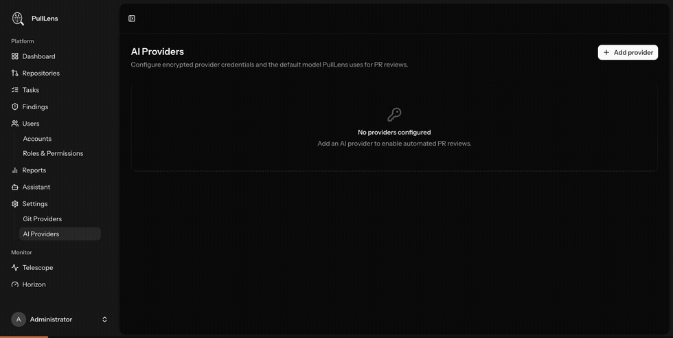
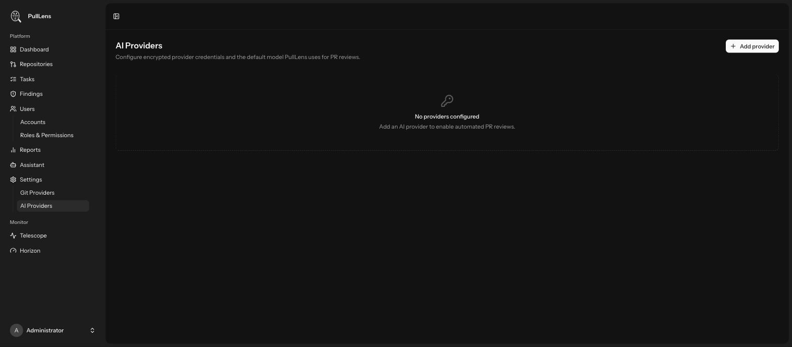
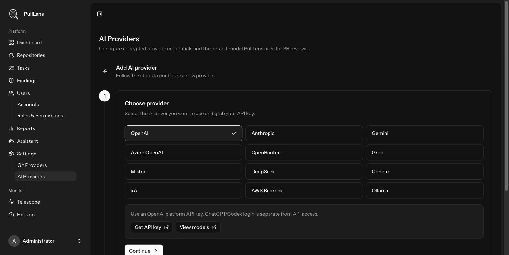
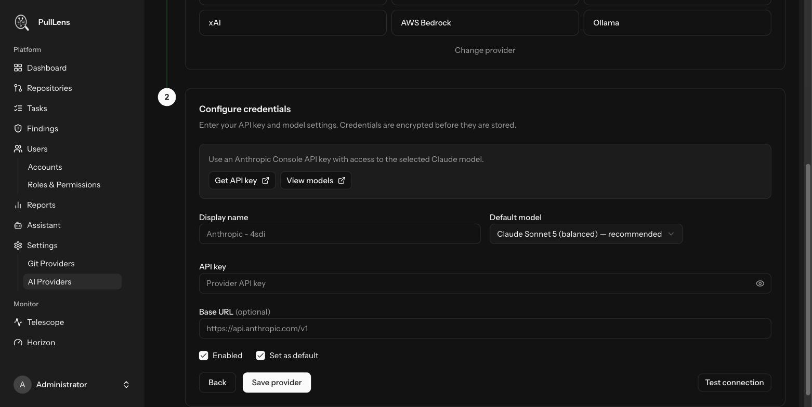

Connecting an AI provider
PullLens has no model of its own. You bring an API key, and you pay your provider directly at cost.

Adding a provider
Go to Settings → AI Providers and press Add provider.

- Choose the service Twelve are supported. Each one shows a direct link to where you get an API key, and to its model list.

The provider grid. Selecting one updates the help text and the links below it. - Enter your credentials Paste the API key and pick a model. PullLens pre-selects the model it recommends for code review.

The credentials step, with Claude Sonnet 5 pre-selected as the recommended model. - Test the connection Press Test connection. PullLens makes one tiny call to confirm the key works and the model is reachable, and reports the round-trip time.
- Save The key is encrypted before it is written to the database, and is never sent back to the browser afterwards.
What each field does
| Field | Meaning |
|---|---|
| Display name | A label for your own reference. Useful when you configure more than one provider. |
| Default model | The model used for reviews unless a repository overrides it. Pre-filled with the recommended choice. |
| API key | Your provider key. Encrypted at rest. Leave blank when editing to keep the existing key. |
| Base URL optional | For self-hosted, proxied or gateway setups. For AWS Bedrock this field is the region instead. For Ollama it is the address of your Ollama server, e.g. http://localhost:11434. |
| Enabled | Turn a provider off without deleting it or losing its key. |
| Set as default | The provider used by every repository that does not override it. Exactly one provider is the default. |
Which model should I use?
Reviews run on every pull request, so the model choice drives both quality and cost. PullLens pre-selects each vendor's balanced production tier rather than its most expensive one — reviewing a diff is a bounded, single-shot task, not long agentic work, and the top tiers cost several times more per review without a matching gain.
| Provider | Recommended | Step up to |
|---|---|---|
| Anthropic | claude-sonnet-5 | claude-opus-5, claude-fable-5 |
| OpenAI | gpt-5.6-terra | gpt-5.6-sol, gpt-5.3-codex |
| Google Gemini | gemini-3.7-flash | gemini-3.1-pro-preview |
| DeepSeek | deepseek-v4-pro | — |
| Mistral | codestral-2508 | mistral-medium-3.5 |
| xAI | grok-4.6 | — |
| Groq | openai/gpt-oss-120b | — |
| Cohere | command-a-plus-05-2026 | — |
| AWS Bedrock | anthropic.claude-sonnet-5 | anthropic.claude-opus-5 |
| Ollama local | qwen3-coder:30b | devstral:24b |
Every call is logged with its token count and estimated cost. Before switching to a more expensive model, look at Reports → AI Usage to see what you are spending now.
Keeping code entirely on your network
Reviewing a diff means sending that diff to whichever provider you configure. If your policy forbids that, run Ollama on your own hardware and select it as the provider. Set Base URL to your Ollama address, leave the API key blank, and nothing leaves your infrastructure — reviews, tasks and reports all work the same way.
Using more than one provider
You can configure several. One is the global default; any repository can override the provider and model in its own settings — for example a cheap local model on a low-risk internal repository, and a frontier model on the payment service.